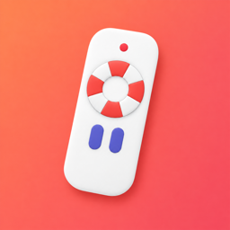

TVRescue
Lost the remote? Your iPhone is the remote.
Snap a photo of your TV, follow the steps for your exact model, and use your iPhone as the remote. Something stops working? Tap Fix. Air conditioners and older TVs work too, with a Wi-Fi IR bridge sold separately.
How it works
Snap your TV
Take a photo of the sticker on the back of the TV, its remote or the box. TVRescue recognises the brand and model, or you pick them yourself.
Follow the steps for your TV
Most smart TVs show a code or an "Allow" prompt, so you usually don't need the old remote. Stuck? Listen to the step or ask the chat.
Use your remote
Power, volume, channels, arrows, OK, back, home and a keyboard. TVRescue finds your TV again even if its network address changes.
What it works with
Smart TVs on your Wi-Fi
Samsung, LG, Google TV and Android TV, Roku TV and Roku players, Fire TV, Vizio, Sony Bravia, Panasonic VIERA, Sharp AQUOS, Philips and Hisense VIDAA. Your iPhone and TV must be on the same Wi-Fi. Available buttons depend on the model.
Air conditioners and infrared TVs
With a Wi-Fi IR bridge (BroadLink RM4 mini or RM4 pro), sold separately and not included in the subscription: power, temperature, mode, fan, Swing and Eco. The app shows where to buy one near you.
Try it free
TVRescue Plus starts with 7 days free on the weekly or yearly plan for new subscribers. There is no charge today, you see the date your trial ends before you confirm, and if you cancel in Settings at least 24 hours before that date you pay nothing. Family Sharing is included. No ads.